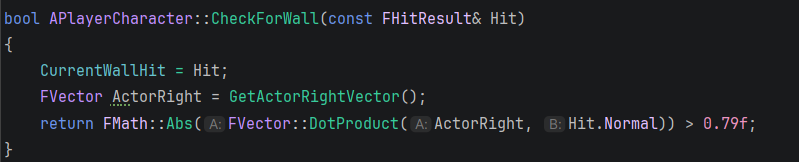
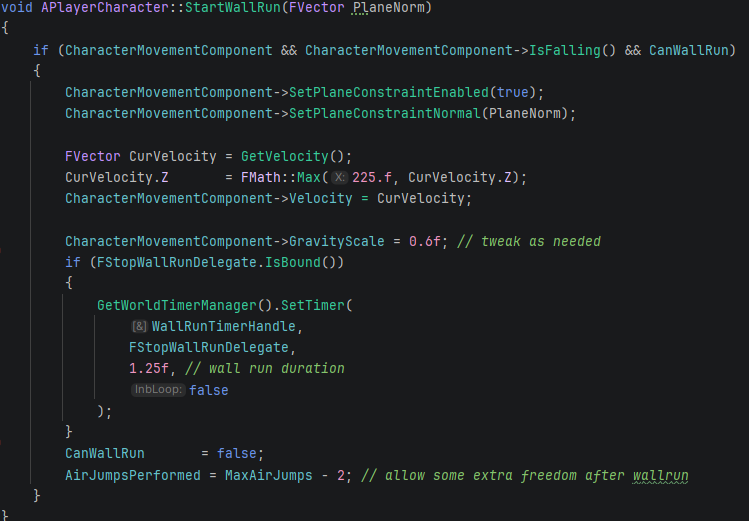
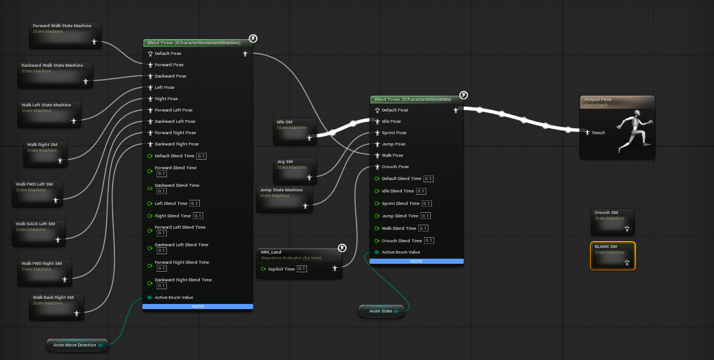
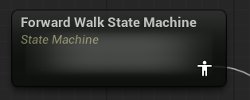
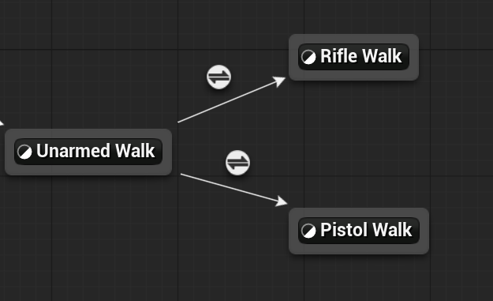
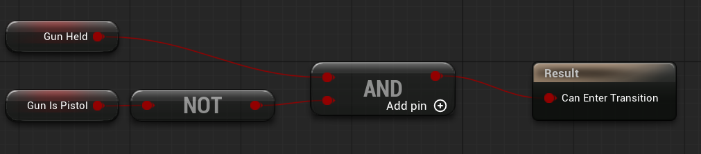
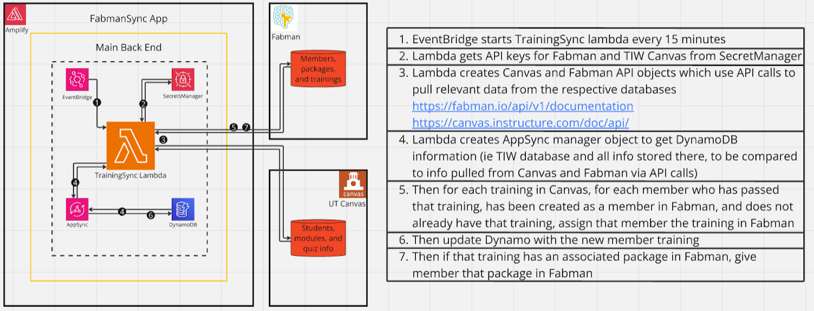

Computer Science · Game Development · Robotics
Harrison Floyd
A Senior Computer Science student at The University of Texas at Austin, building interactive systems across game engines, cloud infrastructure, and hardware.


About Me
Hi, I'm Harrison Floyd — a Senior Computer Science student at The University of Texas at Austin passionate about game development, interactive systems, and immersive technology. I love building experiences that blur the line between digital and physical worlds, combining creativity, engineering, and design.
My coursework in Game Programming Paradigms, Game Technology, and Software Engineering has given me a strong foundation in gameplay mechanics, real-time rendering, and large-scale system design. Beyond the classroom, I've deepened my skills in full-stack development, cloud infrastructure, and hardware prototyping through hands-on projects and internships.
At Texas Inventionworks, I've led technical initiatives that bring ideas to life — developing interactive tools and prototypes that merge software precision with tangible design. I also worked on Robo Rumble, where I engineered and programmed robots from the ground up, exploring how motion, logic, and robot destruction intersect in technology.
I'm driven by the challenge of crafting systems that don't just work — but feel alive. Whether I'm optimizing gameplay code, architecting backend services, or experimenting with interactive hardware, my goal is to build experiences that inspire curiosity and connection.
Education & Skills
Education and skills
Bachelor of Science in Computer Science
2023–2027- University
- University of Texas at Austin
- Current GPA
- 3.87
- Coursework
- Data Structures, Computer Organization and Architecture, Principles of Operating Systems, Game Programming Paradigms, Game Technology, Computer Graphics, Machine Learning, Software Engineering
- Minor
- Robotics — an undergraduate minor consisting of 15 hours of robotics coursework across Computer Science, Mechanical, Electrical, and Aerospace Engineering. Relevant courses: Gateway to Robotics, Robotic Mechanism Design, Machine Learning
V.R. Eaton High School
2019–2023- Address
- 1350 Eagle Blvd, Haslet, TX 76052
- Unweighted GPA
- 3.98
- Weighted GPA
- 5.6585
- Class rank
- 50 of 701
- Composite SAT
- 1480
Professional skills
Software development
Proficient in C, C++, C#, Java, and Python with experience in both object-oriented and real-time programming. Skilled in designing and optimizing gameplay systems, backend services, and interactive software architectures.
Game & simulation systems
Experienced with Unreal Engine 5 and Godot Engine, focusing on player interaction systems, AI behavior, and physics-based gameplay. Adept at integrating code and visual scripting to create immersive experiences.
Cloud & infrastructure
Strong background in AWS including Lambda, Amplify, DynamoDB, AppSync, IAM, and CloudWatch. Experienced in developing scalable full-stack systems, automating infrastructure, and improving reliability across multi-endpoint architectures.
Tools & frameworks
VS Code, Visual Studio 2022, GitLab, Git, Arduino IDE, Dynamixel, Unreal Engine, Godot Engine, AWS Cloud Console, REST APIs, and Agile workflows.
Leadership & collaboration
Led multidisciplinary teams at Texas Inventionworks and Robo Rumble, coordinating engineers and designers to turn prototypes into deployable systems. Experienced in mentoring peers, leading workshops, and managing project life cycles.
Problem solving & innovation
Thrive in experimental, fast-paced environments where creative solutions meet technical precision. Comfortable working from concept to implementation, balancing user experience with system reliability.
Communication & documentation
Skilled in translating complex technical ideas into clear documentation, presentations, and demos for both technical and non-technical audiences.
Adaptability & growth mindset
Constantly learning emerging technologies — from cloud infrastructure to robotics control systems — and applying them across game design, full-stack development, and interactive hardware.
Unreal Engine 5
Unreal Engine 5 projects
Spin The Reel - Work in Progress
Level 01Unreal Engine 5.6 · C++ · Game design · Player controllers · Wheel-system architecture
Early prototype · Last updated: September 2026
The concept
A fast-paced fishing roguelite built around gambling-inspired risk and reward. The planned game challenges players to fish their way out of debt, racing against the clock to meet escalating quotas while assembling increasingly powerful builds.
The central mechanic is a customizable reel wheel: each cast spins the wheel and selects an effect intended to modify the fishing attempt or the resulting catch. The design pairs beneficial wheel slices with penalties, making wheel composition a decision about both probability and risk.
What works in the current prototype
- A third-person player controller.
- Custom C++ classes for the wheel manager and individual wheel slices.
- A charged hook throw that leads into an on-screen spinning wheel.
- A single sample button-mashing minigame launched by the prototype fishing flow.
The prototype connects movement, casting, the wheel UI, and one minigame. It does not yet implement the full quota, item-build, or island-progression systems described in the design document.
My contributions
- Game design: Contributed design work across every section of the game design document, including the core loop, wheel risk/reward, build progression, minigames, and production pipelines.
- Player character: Built the initial third-person player controller in Unreal Engine.
- Wheel architecture: Implemented the custom C++ wheel manager and wheel-slice class system that forms the foundation of the Spin The Reel mechanic.
- Prototype level: Created a rough initial test level for exercising the mechanics. It is a development testbed rather than a polished gameplay space.
Current technical design — the reel
The implementation currently uses two custom C++ classes: a wheel manager and a wheel slice. Wheel.cpp manages the reel and holds a TArray of wheel slices, forming the basis of the wheel's working inventory.
The initial design places the wheel alongside the player so the player object can interact with it. A planned architecture change is to move the manager into a UGameInstanceSubsystem, centralizing access as the system grows.
Planned gameplay and next development priorities
Planned gameplay and progression
- Timed quotas: Escalating debt payments create pressure to catch fish quickly and keep improving a run's earning potential.
- Build choices: Rods, reel components, and trinkets are intended to interact with minigame difficulty and speed, fish weight and value, flavor, species, and multicatching.
- Wheel customization: Players would purchase slices and balance positive effects against negative ones, including low-probability outcomes with larger consequences.
- Varied runs: Procedural islands, shops, additional fishing minigames, swimming, and unlocks between runs are part of the design direction.
Next development priorities
Define a focused playable loop around one island, one achievable quota, the fishing flow, and a small set of meaningful items. Refine the wheel manager's ownership, expand the technical design document, and replace the rough test level with a space suited to playtesting that loop.
Ninja Night
Level 02Unreal Engine 5 · C++ & Blueprints · Movement systems · Wall running · Collaborative AI
The game
- This is the first project in Unreal I created without any restrictions or basic requirements. My team and I decided we wanted to create a momentum-based action game.
- The player's objective is to kill every enemy by using various weapons scattered around the room, while the enemies use a collaborative AI system to decide the individual actions that would most benefit the group.
Interesting features
- An omnidirectional movement system including increasing velocity, air jumps, wall jumping, and wall running
- System of weapons the player and enemies can equip, swing, and throw
- Collaborative AI that recognizes the player's and other AI's status to determine the best action for the group of enemies to beat the player
Wall-running implementation and technical takeaways
Main takeaways
- Prototyping gameplay systems and player movement packages in Unreal's Blueprint and moving that prototype into Unreal C++
- Using wall collisions and surface normals to implement movement
- Prototyping, playtesting, and updating gameplay systems in response to player feedback
- Creating a functional gameplay loop including a main menu for a proper build
- Creating a build for an Unreal project for multiple operating systems
My implementation — wall running
These code screenshots show the wall-run start checks and the logic I implemented to execute the movement.


AI and Networking Horde Shooter
Level 03Unreal Engine 5 · C++ & Blueprints · Multiplayer networking · Swarm AI · Animation state machines
The game
- For this project we wanted to create the ultimate AI swarm networking experience, and nothing brings swarm AI and networking together like a horde shooter.
- Taking inspiration from the likes of Left 4 Dead and Black Ops Zombies, we created a hunting, swarming AI capable of communicating with other AI agents, alongside networking features and third-person shooter game elements.
Interesting features
- AI swarming logic, player audio and visual recognition, and AI agent communication
- AI spawners to create increasingly larger hordes of enemies in a spread area
- Advanced animation trees to support animations in all states with and without various weapons
- Networking support for up to 4 players
Animation system and technical takeaways
Main takeaways
- Creating, texturing, and remapping resources (guns in this case) the player can equip and interact with
- Advanced animation tree structure relying on multiple layers of state machines
- Mapping items to player skeleton rigs to create smooth animations
- Basic networking structure and syncing
- Advanced AI features via C++ to maintain performance
Animation system
Each screenshot zooms into a node of the one before it: the overall tree, then the forward-walk state, the walk transition inside it, and finally the unarmed-to-rifle branch inside that. Click any image for full size.




Godot 4
Godot game engine 4
Freeze the Devil
Level 01Godot · GDScript · Timeline state management · Signal-driven gameplay · Bomb chain reactions · Boss mechanics
Texas Game Jam 2026 · UT Austin · September 25–27, 2026
Godot · Team of three · Jam theme: Chain Reaction
The game
A puzzle platformer built over a weekend for Texas Game Jam 2026. You play as a little ice cube descending into hell to refreeze the Devil before he escapes his icy prison and makes hell hot again.
A magic kalimba lets you travel between a frozen past and a fiery present. Arrange ice blocks and dynamite in the past, then shift to the present: ice blocks become fire points that ignite bombs. Set up a chain reaction to clear the level and descend deeper into hell.
My contributions
- Player movement: Designed and implemented a responsive platforming controller for navigating the levels.
- Time travel and world state: Implemented a past/present system where changes in the past directly alter the present, while actions in the present leave the past unchanged.
- Bomb chain reactions: Built bombs that detonate on contact with flames, detect nearby bombs, and trigger further explosions.
- Kalimba input and coordination: Built an instrument that recognizes specific input patterns as songs and coordinates time shifts across the player, level objects, music, and background.
- Water as a traversal mechanic: Adapted an existing visual-water tool so water lifts the player in the past, creating a route that disappears in the hot present.
- Scoring and levels: Implemented a points manager that persists across level transitions, along with tile mapping.
- Boss encounter: Implemented a full boss fight with multiple phases, projectiles, and parries.
Time travel, music, and chain reactions
The gameplay demonstration shows how playing a kalimba melody changes the timeline and how bomb placement determines whether an explosion chain succeeds. An initial arrangement falls short; a complete chain then demonstrates the solution.
Code showcase: timelines, kalimba input, and bomb chains
The central technical challenge
The two timelines need to preserve different world states while maintaining a one-way relationship: changing the past changes the present, but changing the present cannot rewrite the past. That rule connects object placement, fire, bomb explosions, and traversal into a single puzzle system.
The kalimba serves as the player's interface to this system, coordinating the gameplay and presentation changes when a song triggers a time shift.


Bomb behavior and scene structure
The explosion method and bomb scene show how detection areas, object state, and deferred calls work together to produce a chain reaction without repeatedly triggering the same bomb.


Boss demonstration and planned improvements
Boss encounter — current jam build
The boss demonstration shows a quick finish: one parry and two dynamite explosions defeat the boss through both phases. This also exposes a balancing issue in the jam build: damage can bypass the intended second-phase encounter.
What I would improve next
The jam build demonstrates the core systems, but playtesting exposed several areas I want to refine:
- Block movement and puzzle recovery: Blocks can stick to the ground and become unpushable from certain directions. I would investigate collision clearance and ground friction, test a small floor buffer, and add a pull interaction so players have more ways to recover a block's position.
- Audio lifecycle: Some voice lines replay when a level restarts after death. I would centralize shared audio in a persistent manager and track which voice lines have already played, separating replayable sound effects from one-time dialogue.
- Boss readability and progression: The second-phase attack needs a visible cue. I would add a clear visual telegraph, revise damage and phase-transition handling so two dynamite explosions cannot bypass the second phase, and refine parry timing and feedback.
Team and asset credits
Team and asset credits
Created with Kemblebee and Tokani as Team Crowbar. My contributions above focus on gameplay systems; full team and external-asset credits are available on the jam submission.
The water mechanic builds on a water-class base by Jesse Madyson (Mostly Mad Productions), which I adapted for platforming and time travel.
AWS cloud services
AWS infrastructure
AWS Database Synch
Level 01Python · AWS Lambda · DynamoDB & AppSync · REST API integration · Workflow automation
The system
- Automated training-synchronization backend that bridges Fabman, UT Canvas, AWS AppSync, and DynamoDB to streamline how staff verify training completion and manage equipment access for thousands of makerspace users.
- Built on top of several Python-based Lambdas, the system regularly updates NoSQL databases with updated training information provided by Canvas quizzes, sent through AWS to a third-party database, Fabman.
- Fabman then provides physical boxes known as Machine Access Control (MAC) boxes, which ensure a given machine is off until a trained person scans into it.
The impact
- 60+ staff members no longer need to manually verify training completion or update Fabman access profiles for 5000+ students.
- Reduced a multi-hour weekly administrative burden to a fully automated process.
- Eliminated common human errors in training assignment and access control.
- Standardized training records across two previously disconnected platforms.
- Improved safety and compliance by guaranteeing only trained students gain access to specific makerspace equipment.
- Enabled real-time access provisioning — students can unlock resources minutes after completing training.


Lambda execution details
CanvasSync Lambda
- Triggered every 15 minutes by EventBridge
- Retrieves API keys from Secrets Manager
- Pulls course, module, and quiz-completion data from Canvas
- Cross-checks members against DynamoDB
- Creates new members in Fabman as needed
- Creates new training objects in Fabman if they don't exist
- Writes all synced member and training data into DynamoDB via AppSync
TrainingSync Lambda
- Also runs every 15 minutes
- Fetches Fabman members, packages, and training records
- Compares each user's Fabman trainings with Canvas completion data
- Automatically assigns Fabman trainings when students complete Canvas modules
- Automatically assigns Fabman packages (equipment access) when relevant
- Updates DynamoDB with all new member-training relationships
Robotics coursework
Robotics coursework
Gateway to Robotics: Boston Dynamics Spot Leg
Level 01Python · Inverse kinematics · Jacobian methods · Servo control · Hardware prototyping
The robot
- This was the introductory project for all UT Robotics Minor students — a 3-DOF arm based on Boston Dynamics' Spot robot's leg.
Main features
- 3D-printed and laser-cut components attached to 3 servo motors connected in series to a Dynamixel microcontroller, which then connects to a laptop to be controlled by Python scripts or the Dynamixel Wizard desktop application.
- Python code written by us to calculate the joint positions based on the given end-effector position (inverse kinematics).

Challenges
- The most difficult part of this project was creating the Python code to successfully calculate the inverse kinematics for any given end-effector position — specifically avoiding singularities, determining the inverse Jacobian matrix at any given step, and throwing out bad solutions.
- Also, the insanely tiny screws on the motor mounts.
Results
- In the end we were able to get the robot and Python script fully functional — you could type any position within reach of the end effector into the script and the robot would (mostly) cleanly move to within a few millimeters of that location.
Combat robotics
Competitive combat robotics
The Baja Bunny
Level 01Mechanical design · Material selection · Drivetrain design · Fabrication · Team collaboration
The robot
- The Baja Bunny was a 3lb vertical spinner, 4-wheel belt-driven combat robot that had a final bot budget of $300.
Main features
- Bunny ears used to keep the weapon from hitting the floor when the bot is flipped upside down
- Side paneling made from UHMW (thick and strong plastic) to protect the wheels and drivetrain
- TPU back and center pieces to act as a flexible center chassis
- Front plate ramp to drive up other bots into the vertical spinner

Challenges
- The main struggle with the Baja Bunny was the belts on our drivetrain — we unfortunately weren't able to get the belts connecting the two main motors to the four wheels to work well, so our drivetrain struggled the whole time. If I were to do it over again, I'd use belts with teeth instead of essentially O-rings.
Results
- The Baja Bunny placed low, but it was my team of four's first attempt at a combat robot, and we were still able to puncture our first opponent's battery and start a LiPo fire.
- In the match footage, the Baja Bunny (white) rips the opponent (purple) in half, and — at the behest of the crowd — goes for the finishing blow on the LiPo battery.
Certifications
Certifications
Programming
A certification for those that understand the universal concepts of programming as well as the specifics of syntax and semantics of both Python and Python 3, and fundamental skills in resolving typical implementation challenges.
A certification for those with the skills and knowledge to write and recognize syntactically correct Python code, recognize its data types, and write and recognize logically correct Python code.
A certification for those with the skills and knowledge to write, debug, and maintain well-formed, well-documented Java code, and solve a fundamental level of problems using syntactically correct Java code.
A certification for those with the skills and knowledge to write, debug, and maintain well-formed, well-documented JavaScript code, and solve a fundamental level of problems using syntactically correct JavaScript code.
Microsoft Office
A certification for understanding the fundamentals of Excel, and efficiently completing tasks using Excel.
A certification for understanding the fundamentals of PowerPoint, and efficiently completing tasks using PowerPoint.
A certification for understanding the fundamentals of Word, and efficiently completing tasks using Word.
A certification for understanding the fundamentals of all aspects of the basic office package, including Word, PowerPoint, and Excel.
Other
A certification for those with a fundamental knowledge and ability to perform tasks in the real world using operating systems, common PC hardware and software, basic networking, databases, programming, security, and information systems.
A certification for those able to perform real-world tasks using the Windows operating system and a wide variety of networking hardware and software.
A certification for those with knowledge of various types of workplace hazards, safety PPE, and laws and standards for general workplaces, as well as how to manage others in following these safety practices to best keep a safe work environment.